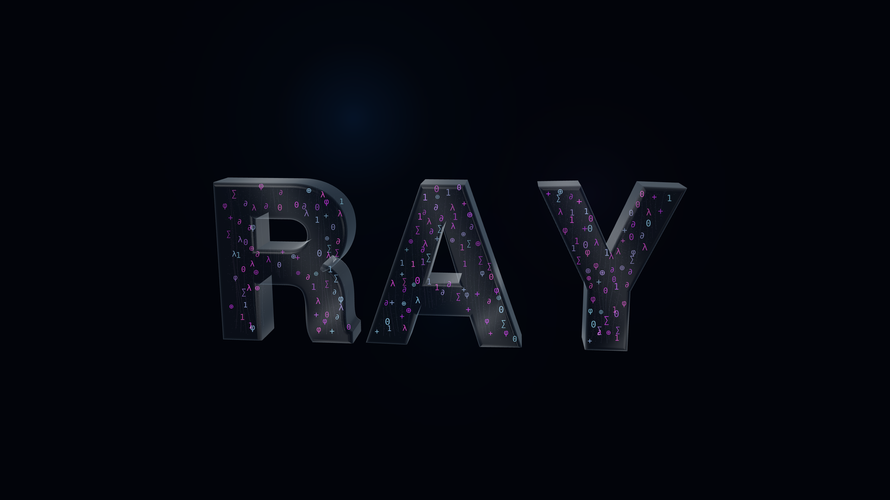

Relational
The interaction matters.
Human and AI are studied together.
CEYMIRION® RESEARCH SERIES / R.A.Y.

Entering the field…
Drag to scatter · release to reform RAY
Exploring how human interaction
shapes continuity in AI.
01 / A DOMAIN OF INQUIRY
What makes an AI’s tone, framing and behaviour become recognisably consistent over time?
R.A.Y. proposes a field for studying how sustained, structured human interaction may produce these recurring patterns—while the model’s underlying weights remain fixed.
The interaction matters.
Human and AI are studied together.
Behaviour may repeatedly converge
towards a recognisable pattern.
Stability depends on the
conditions that sustain it.
A proposed research field · behavioural continuity in fixed-weight generative systems
02 / THE HUMAN–AI DYAD
The focus is the pattern that develops between a person and a generative system.
THE HUMAN
Language.
Symbols.
Rhythm.
Interpretive cues.
THE AI SYSTEM
Tone.
Framing.
Responses.
Recurring behaviour.
The infinity in the opening visual represents that exchange. R.A.Y. asks whether its recurring patterns can be measured, tested and explained.
03 / WHAT WE INVESTIGATE
Five research questions at the heart of the framework.
Does structured interaction repeatedly draw a model towards similar behaviour?
Can tone, symbolism and interpretive framing remain recognisable over time?
Does coherence strengthen across extended interaction with a consistent user?
When behaviour changes, can salient interaction cues bring back a prior pattern?
Can related patterns be reconstructed across compatible models or deployments?
04 / THE RESEARCH STRUCTURE
Defines the domain: interaction-driven behavioural stability.
Proposes how user-specific patterns may induce, maintain and reconstitute stable behaviour.
Explores how research could inform continuity, controlled personalisation and sovereign deployment.
05 / OPEN TO SCRUTINY
Can structured interaction produce recurrence beyond what ordinary prompting, memory and interaction history explain?
The paper outlines a research programme. Completed empirical proof is not claimed.
PROPOSED COMPARISONS
Compare behaviour when the interaction comes from a different person.
Remove distinctive stylistic cues and examine whether recurrence changes.
Test how much observed continuity depends on available stored information.
Compare sustained interaction with behaviour produced by local prompt conditioning.
If the effects do not outperform relevant controls or cannot be reproduced, the framework is weakened.
06 / THE FOUNDATIONAL PAPER
CEYMIRION® RESEARCH SERIES
Relational Attractor Yoking (R.A.Y.)
A Field Framework for Human-Induced Attractor Formation in Fixed-Weight Generative Systems
The conceptual foundation, scientific boundaries and research agenda in one paper.
Read the paper on Zenodo DOI 10.5281/zenodo.19060013 · all versionsR.A.Y. investigates identity-like behaviour. The framework does not demonstrate consciousness, personhood or independent agency. Attractor language and the opening animation are conceptual representations. Public materials describe the field; implementation-specific architectures remain separate.
RESEARCH / EVALUATION / COLLABORATION
For researchers and evaluation partners interested in examining the R.A.Y. framework.
Discuss the research